| 3 groups, 6 emotions, 9 menus | 3 purpose-built websites | 90 tasks (6 matched subsets + practice, per site) |
| ≈ 50 min per participant | 1 command per session | 11 output files per participant |
Each group has two contrasting emotions and its own website. Every participant experiences both emotions of their group (within-subjects), so each person serves as their own baseline. This matters for a sample of 5–6 participants per group.
| Group | Emotions | Contrast in the signals | Website (our own build) |
|---|---|---|---|
| G1 | Stress vs. Calm | high vs. low arousal, negative vs. positive | University student portal |
| G2 | Frustration vs. Boredom | high vs. low arousal | Online store |
| G3 | Joy vs. Sadness | positive vs. negative valence | Discussion forum |
Menu is the second factor. A menu belongs to one group only. The three menus per group differ in whether items are hidden or visible, how many steps reach a page, and which input is used (hover, click, typing). All nine navigate the same 6×6 pages with the same content; only the way of navigating changes. The full specification is in MENUS.md.
| Group | ID | Menu | Fastest path |
|---|---|---|---|
| G1 | M1 | Hover drop-down: point at a section, a list of its pages opens (the phase-1 menu, unchanged) | 1 click (hover, click) |
| M2 | Persistent sidebar tree: sections always on the left, pages unfold in place | 2 clicks; 1 if the section is already open | |
| M3 | Hub and spoke: a hub of six large section cards, then the section's pages | 2 clicks | |
| G2 | M4 | Click drop-down with large (56 px) targets; no hover | 2 clicks |
| M5 | Mega-menu: one “All pages” button opens a full-width panel showing every section as a column | 2 clicks | |
| M6 | Search-first: type-ahead over all 36 page titles, Browse as a fallback | 1–2 clicks and typing | |
| G3 | M7 | Hamburger drawer with drill-down: a section list, then that section's pages with a Back button | 3 clicks |
| M8 | Radial (pie) menu: six sectors, then a ring of six pages | 2 clicks | |
| M9 | Always-visible two-row tab bar: sections on top, pages below | 2 clicks; 1 if the section is already selected |
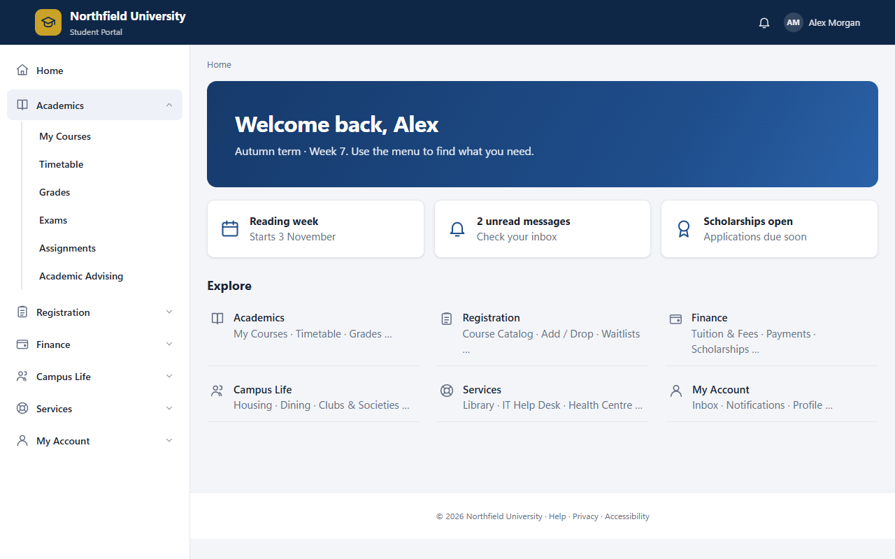
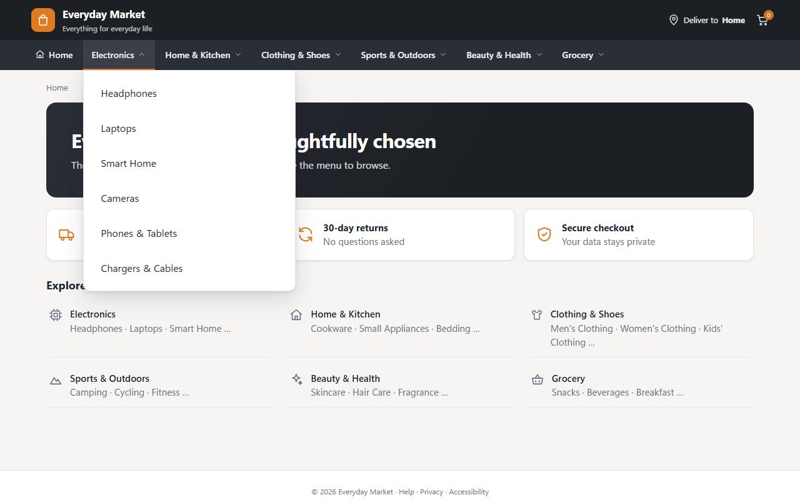
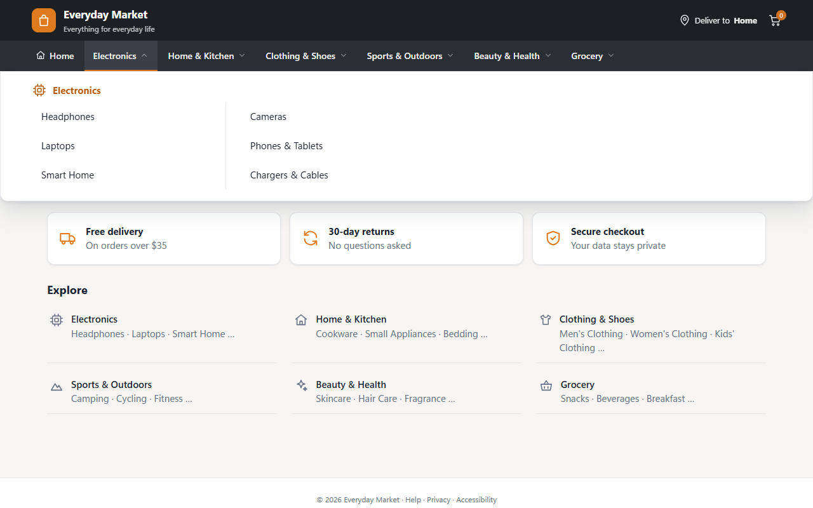
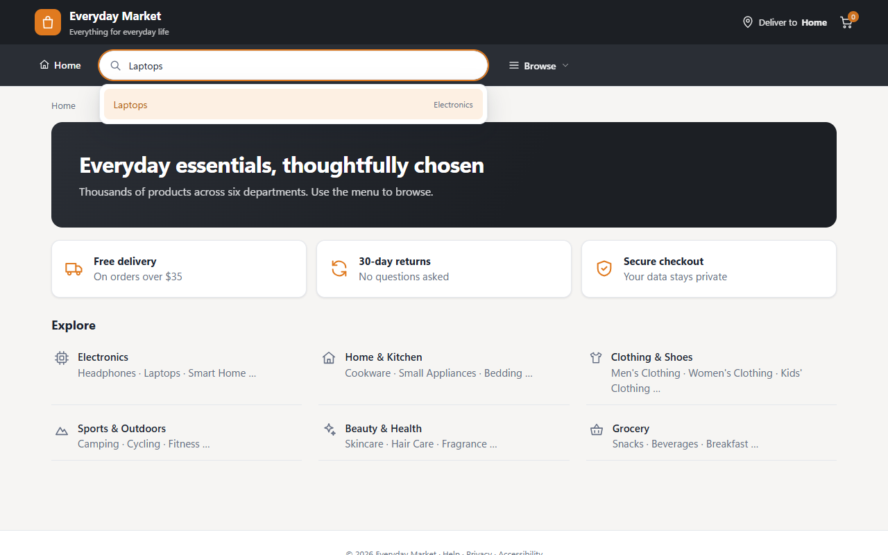
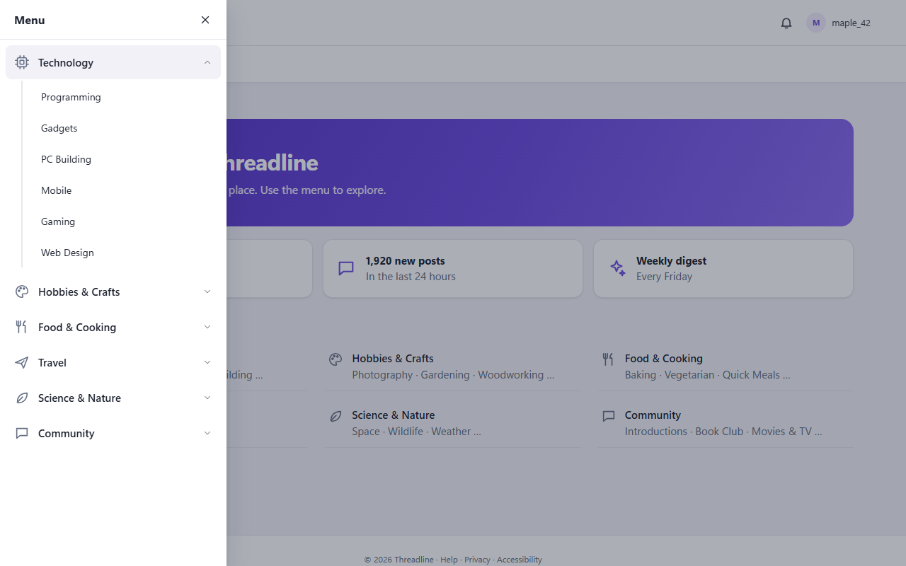
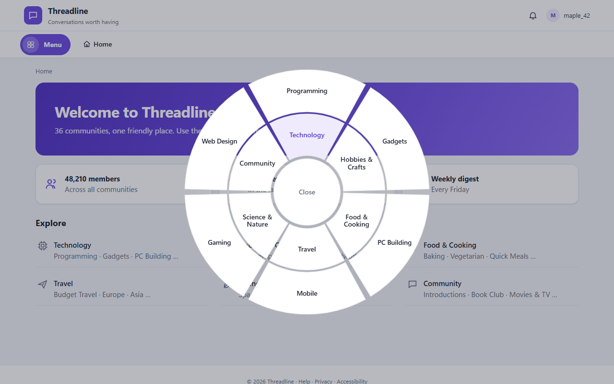
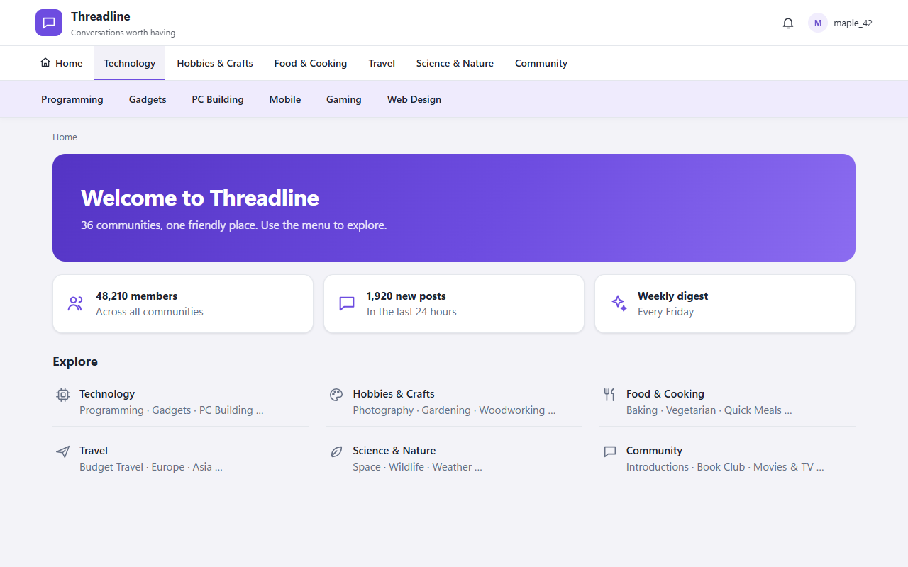
The participant number n within a group decides everything. With k = (n−1) mod 6, the emotion order uses k mod 2 and the menu order uses row k mod 3 of a cyclic Latin square. Because 2 and 3 are coprime, six participants (P01–P06) contain each of the six combinations exactly once. Both emotion blocks of one participant use the same menu order. Each group has six matched task subsets (S1–S6); the cell (emotion, menu) with index c = 3·emotion + menu gets subset (c + k) mod 6, so every participant meets every subset once and, across six participants, every cell meets every subset once. The plan is printed when the session starts and saved with the data.
The app runs on the researcher's PC. A small local web server holds the session state and writes the data; the participant sees only a fullscreen browser. The browser has two layers: a shell (consent, inductions, ratings, ranking) and, inside it, the site engine (one of the three websites with one of the nine menus). Menus are plug-ins; the induced faults and the logging are written once in the engine.
Every menu implements the same small interface and is looked up by its ID in a registry. The engine gives each menu the same tools, so all nine log identical events: menu_open, menu_close, item_hover_enter, item_hover_exit, item_select, search_query (M6 only), backtrack (navigating to a page already visited in the same task, Home included) and page change. Every menu item exposes its bounding rectangle, so gaze recorded elsewhere can later be mapped to items. All menus are fully usable with the mouse alone. The faults that induce frustration are not implemented per menu; the engine applies them identically, and every fault has an equivalent in each menu (for example “the menu closes by itself” collapses the tree, closes the drawer or dismisses the radial menu).
One session is about 50 minutes and runs by itself. The participant follows on-screen instructions; the researcher only watches.
| Part | Sub-parts and what the participant does | Why it is there |
|---|---|---|
| 1. Welcome and consent | Welcome screen, consent (tells them layouts will vary and some activities may affect how they feel; emotions are not named), demographics, comfort questions. | Ethics; covariates (age, handedness, caffeine, site familiarity). |
| 2. Baseline | 3 minutes of rest on a fixation cross, then the first mood rating. | The neutral reference for every later comparison. |
| 3. Menu practice | For each of the three menus: a short neutral introduction and two practice tasks (from a separate pool). Rows are labelled practice and excluded from analysis. | Learning a menu is not measured as emotion-related behaviour. |
| 4. Emotion block (twice) |
|
The induction fades over the tasks, so boosters renew it. The same three menus appear under each emotion for within-person comparison. |
| 5. Neutral video | 2.5 minutes of a neutral video, then a mood rating. | Resets the mood before the second emotion. |
| 6. Second emotion block | The same as part 4 with the group's other emotion and the same menu order; a different task subset in each cell. | Within-subjects design. |
| 7. Debrief | Explains every manipulation, including the deliberate faults and the fixed “ranking”; asks again for permission to use the data (declining deletes it). Verbal wellbeing check by the researcher. | Ethics. |
Sensors measure physiology (arousal, attention), not named emotions, and several emotions look alike in the signals. The ratings therefore serve as labels for training the model, as a manipulation check that each induction worked, and as a way to validate the sensors. After training, the adaptive system uses only behaviour, so ratings are needed only during data collection.
Each emotion is induced once at the start of its block with a published method. Where the literature supports it, a manipulation during the tasks keeps the state going, because film clips alone fade within minutes [11]. Because one block now spans three menus (about 14 minutes), a short booster re-cues the state before sub-blocks 2 and 3. In-task manipulations and boosters are identical for all three menus.
| Emotion | Induction (≈ 3 min, once per block) | During the tasks | Basis |
|---|---|---|---|
| Stress | Timed mental arithmetic (MIST) with a rigged “you vs. average” bar and negative feedback | Visible 30 s countdown per task; “compared with other participants” banner | [3], [8] |
| Calm | Nature video with paced breathing (6 breaths/min) | “No rush” instructions, no timer | [10], [9] |
| Frustration | Goal and incentive framing (“fastest participants get a bonus”) | Deliberate faults: slow pages, ignored clicks, menus closing, “session expired” | [1], [2] |
| Boredom | Copying dull technical text | Every task uses the same repetitive template | [12], [4] |
| Joy | Wordless comedy clip (Mr. Bean, “The Exam”) | Surprise “Bonus unlocked!” rewards | [5], [6] |
| Sadness | Sad film scene (Taare Zameen Par), then quiet reflection | None | [5] |
| Emotion | Booster (before sub-blocks 2 and 3) | Length |
|---|---|---|
| Stress | One more arithmetic round | 30 s |
| Calm | Paced breathing over the nature clips | 40 s |
| Frustration | Speed-bonus reminder with a fixed, unfavourable “current ranking” (15th of 18, then 16th; revealed as fixed at the debrief) | up to 30 s |
| Boredom | More of the dull copying task | 30 s |
| Joy | Short amusing clip (to be supplied; a marked placeholder is shown until then) | up to 35 s |
| Sadness | Short sad clip (to be supplied), then quiet reflection | up to 45 s |
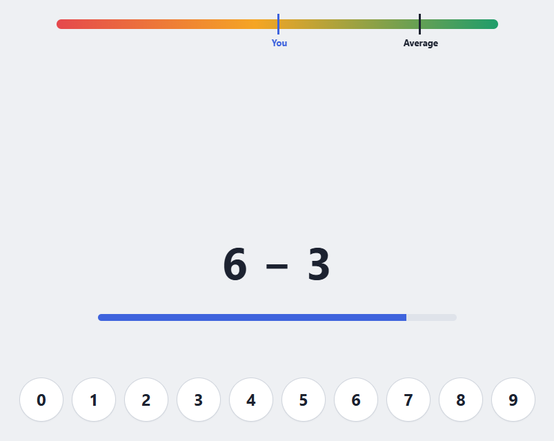
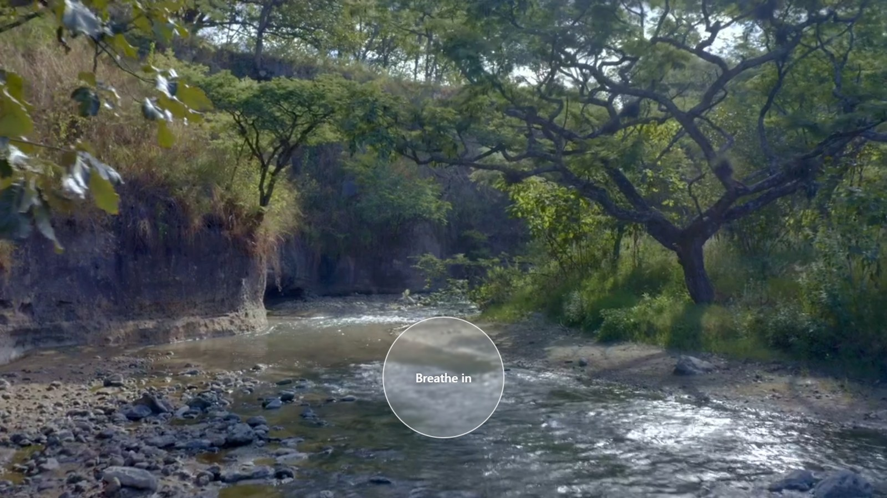
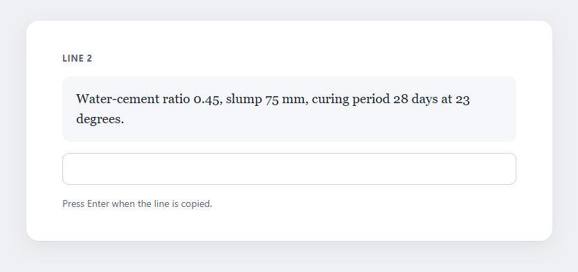
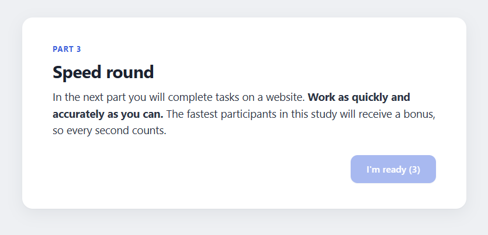
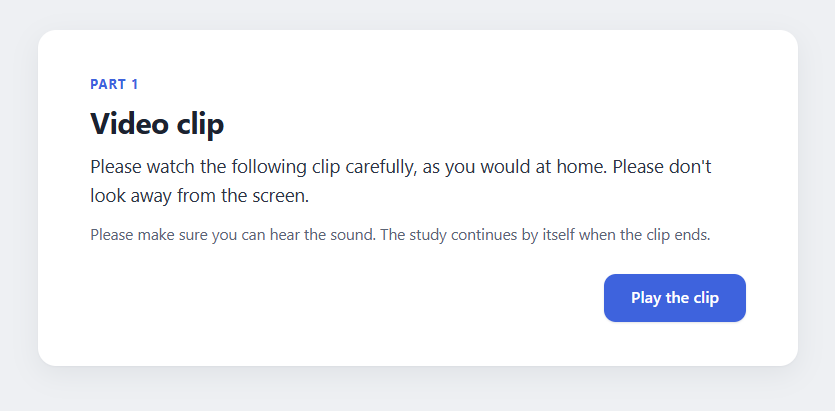
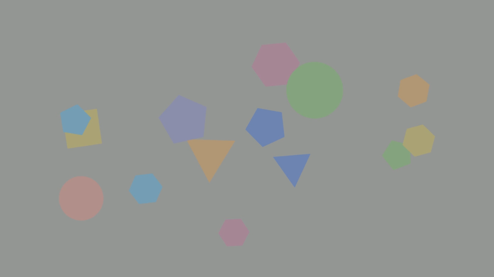
The three websites are our own builds on one shared engine, so menu behaviour, timing and logging are identical across groups. Their structure is modelled on the realistic sites of the WebArena benchmark [14]: 6 sections × 6 pages, with the menu as the only way to navigate. Every page change in the data is therefore a menu interaction, which is what phase 2 will adapt. Page content is identical in every menu.
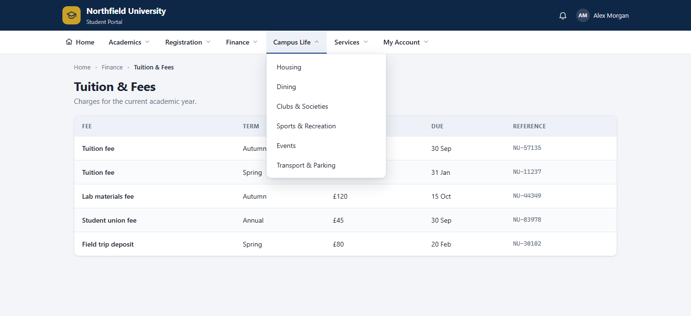
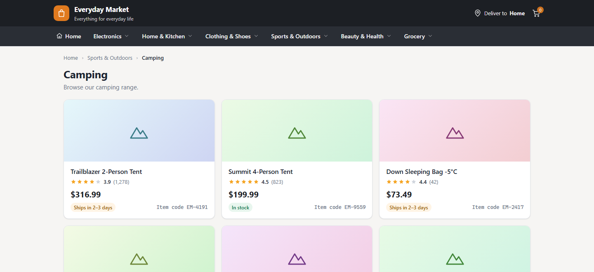
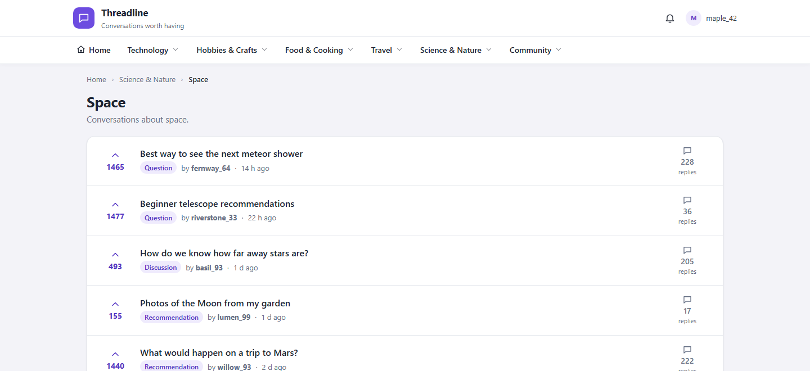
| Task type | Example (G2 store) | What it measures |
|---|---|---|
| Look-up (2 per subset) | “Find the Trailblazer 2-Person Tent. What is its price?” | Finding the right menu path from an item name |
| Extreme (1 per subset) | “Find the cheapest vitamin or supplement.” | Navigating, then scanning a page |
| Compare (1 per subset, two pages) | “Which is cheaper: the Yoga Mat or the Vitamin C Serum?” | Navigating across several pages |
Every sub-block has exactly four tasks with a per-task time limit, so a sub-block takes at most about 2.7 minutes and each emotion × menu cell yields the same amount of data. Subsets are matched for task type and number of target pages, so any subset can be used with any of the group's menus; automated tests complete every task in every real menu.
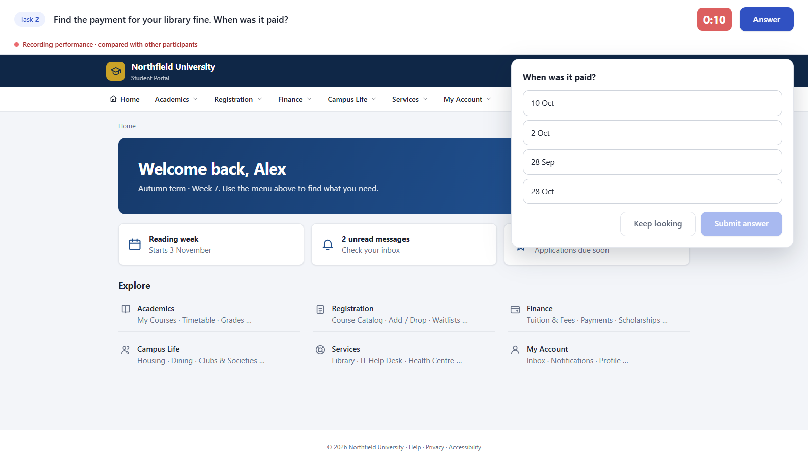
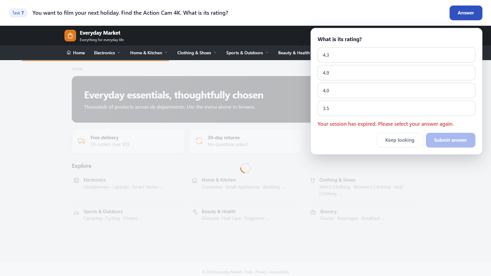
| Source | What is recorded |
|---|---|
| Behaviour | Every click, menu open/close, item hover (with dwell time), item select, search query, page view, backtrack, mouse movement (up to 60 Hz), and the on-screen rectangle of every menu item |
| Performance | Per task: outcome, time, clicks, wrong pages, backtracks, mouse path length, and the fewest clicks and steps that menu needs; per sub-block: all of this aggregated |
| Self-report | SAM valence/arousal/dominance [13], six emotion ratings after every induction and sub-block, a three-item NASA-TLX [7] (mental demand, effort, frustration) after every sub-block, and a menu preference ranking |
Each participant gets one folder, for example data/G2/P04/. Every row of markers, events, tasks, questionnaires and merged carries the same six labels (phase, emotion_block, emotion, sub_block, menu_id, menu_type); practice rows are labelled so they can be excluded.
| File | Contents |
|---|---|
| session.json, plan.json, plan.txt | Group, counterbalancing plan, screen, progress, status |
| markers.csv | Start and end of every step; the labels |
| events.csv, mouse.csv, aoi.csv | Raw behaviour: events, cursor positions, menu-item rectangles |
| tasks.csv | One row per task with outcome and the measures above |
| subblocks.csv | One row per sub-block: aggregated task measures, six mood ratings, workload, menu preference |
| questionnaires.csv | Consent, demographics, SAM, mood, workload, ranking, debrief choice |
| merged.csv | The model-ready 10 Hz behavioural timeline: phase, emotion, menu, sub-block, task, mouse position, menu state, event counts |
cd "C:\Users\A-ONE LAPTOP\HCI\hci-llm-emotion-adaptive-menus" pip install -r requirements.txt
Requirements: Python, Microsoft Edge, and the stimulus videos for a real session (see below).
| Command | What it does |
|---|---|
| python run.py preview --group G2 --menu M5 | Opens a group's website with one menu, nothing recorded. Use G1 for M1–M3, G2 for M4–M6, G3 for M7–M9. Add --debug to show the logged events. |
| python run.py check | Checks config, every task answer in every menu, videos, browser and the planned session length; must say “Ready.” (--dry-run turns missing videos into warnings) |
| python run.py session --group G2 --participant P04 | Runs a real session (about 50 min) in a fullscreen browser and saves to data/G2/P04/ |
| … --fast --pilot --windowed | Demo run: timings about 12× shorter, saved in data/_pilot/, missing videos shown as placeholders |
| … --resume | Continues an interrupted session from the sub-block it was in |
| python tools/participant_bot.py --group G2 --participant P03 --headed | A scripted participant completes a whole session in a visible Edge window (hands-off demo) |
| python run.py export | Combines all participants into data/exports/ |
| python run.py clean-pilot | Deletes the demo data |
| python -m pytest | All 145 automated tests (about 13 minutes; 6 skipped by default) |
The terminal shows the plan at the start, for example:
scheme 1 of 6: emotion order stress > calm, menu order M1 > M2 > M3 block 1 (stress): 1: M1/S1 2: M2/S2 3: M3/S3 block 2 (calm): 1: M1/S4 2: M2/S5 3: M3/S6
Built-in safeguards: a session will not start if a required video is missing (the two optional booster clips only warn); every data row is saved immediately; an interrupted session resumes at sub-block level, with the interrupted attempt kept and flagged; a participant ID can never be reused; participants never see emotion names or correct answers; faults occur equally often in every menu.
| Group | Typical | Worst case (every task times out) |
|---|---|---|
| G1 | about 45 min | about 48 min |
| G2 | about 42 min | about 47 min |
| G3 | about 49 min | about 54 min (the two film clips are long) |
| Item | Status |
|---|---|
| Websites, tasks, inductions, questionnaires, debrief (all three groups) | Done |
| Nine menus, practice, sub-blocks, boosters, menu ranking, per-sub-block summary | Done |
| Six full dry runs (3 groups × 2 participant numbers) with a scripted participant in a real browser; 145 automated tests including every task in every real menu | Passed |
| Videos: nature, neutral, amusement, sadness (installed on the lab machine, not in the repository) | Check on the lab PC |
| Two optional booster clips for G3 (joy and sadness; placeholders until supplied) | Next |
| Consent-form details (contacts, ethics number); review the nine menus with the preview command | Next |
| Ethics approval; recruit 5–6 participants per group (15–18 in total) | Next |
| Sensors (GSR, EEG, eye tracking): recorded outside this app, aligned through the master clock | Separate |
| Phase 2: train the emotion model (transformer) and build the adaptive menus | Later |
[1] I. Ceaparu, J. Lazar, K. Bessiere, J. Robinson, B. Shneiderman. Determining causes and severity of end-user frustration. Int. J. Human-Computer Interaction, 17(3):333–356, 2004.
[2] J. Scheirer, R. Fernandez, J. Klein, R. W. Picard. Frustrating the user on purpose. Interacting with Computers, 14(2):93–118, 2002.
[3] K. Dedovic et al. The Montreal Imaging Stress Task. J. Psychiatry & Neuroscience, 30(5):319–325, 2005.
[4] A. Markey, A. Chin, E. M. Vanepps, G. Loewenstein. Identifying a reliable boredom induction. Perceptual and Motor Skills, 119(1):237–253, 2014.
[5] J. J. Gross, R. W. Levenson. Emotion elicitation using films. Cognition and Emotion, 9(1):87–108, 1995.
[6] A. M. Isen, P. F. Levin. Effect of feeling good on helping: Cookies and kindness. J. Pers. Soc. Psychology, 21(3):384–388, 1972.
[7] S. G. Hart, L. E. Staveland. Development of NASA-TLX. Advances in Psychology, 52:139–183, 1988.
[8] C. Kirschbaum, K. M. Pirke, D. H. Hellhammer. The “Trier Social Stress Test”. Neuropsychobiology, 28(1–2):76–81, 1993.
[9] P. M. Lehrer, R. Gevirtz. Heart rate variability biofeedback: How and why does it work? Frontiers in Psychology, 5:756, 2014.
[10] R. S. Ulrich et al. Stress recovery during exposure to natural and urban environments. J. Environmental Psychology, 11(3):201–230, 1991.
[11] R. Westermann, K. Spies, G. Stahl, F. W. Hesse. Relative effectiveness and validity of mood induction procedures: A meta-analysis. European J. Social Psychology, 26(4):557–580, 1996.
[12] W. A. P. van Tilburg, E. R. Igou. On boredom: Lack of challenge and meaning as distinct boredom experiences. Motivation and Emotion, 36(2):181–194, 2012.
[13] M. M. Bradley, P. J. Lang. Measuring emotion: The Self-Assessment Manikin and the semantic differential. J. Behav. Ther. Exp. Psychiatry, 25(1):49–59, 1994.
[14] S. Zhou et al. WebArena: A realistic web environment for building autonomous agents. In Proc. ICLR, 2024.
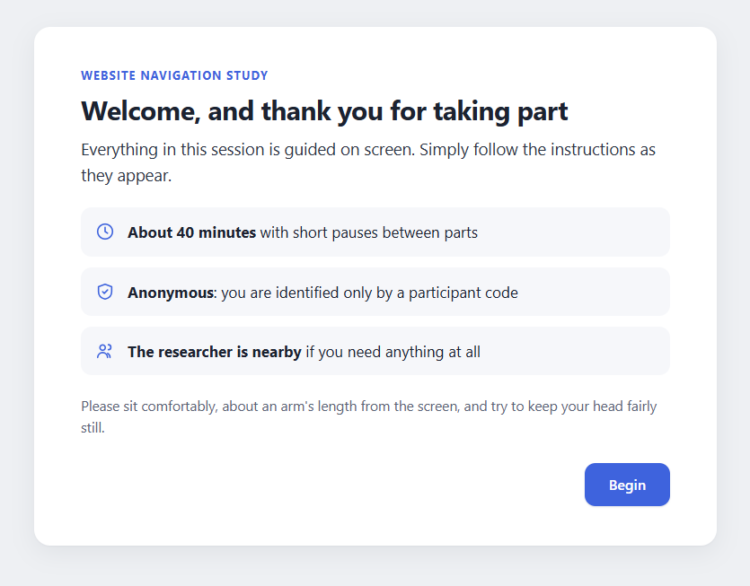
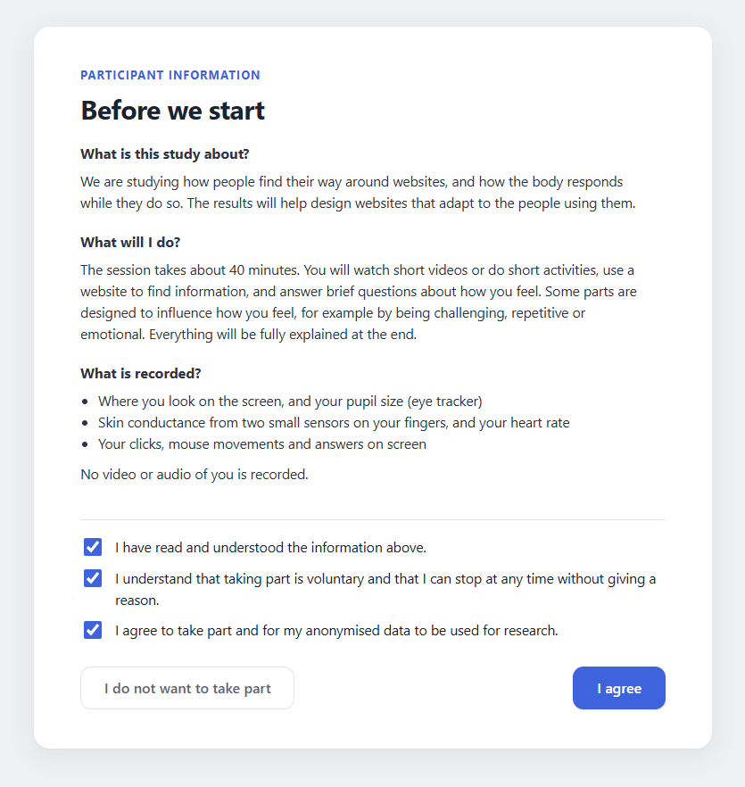
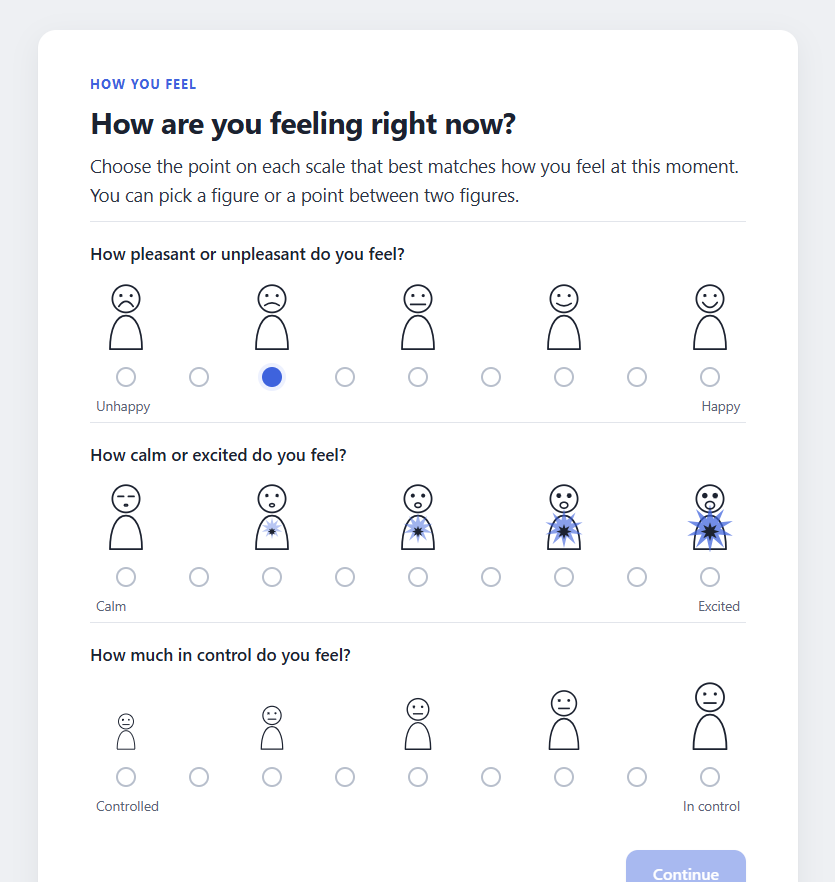
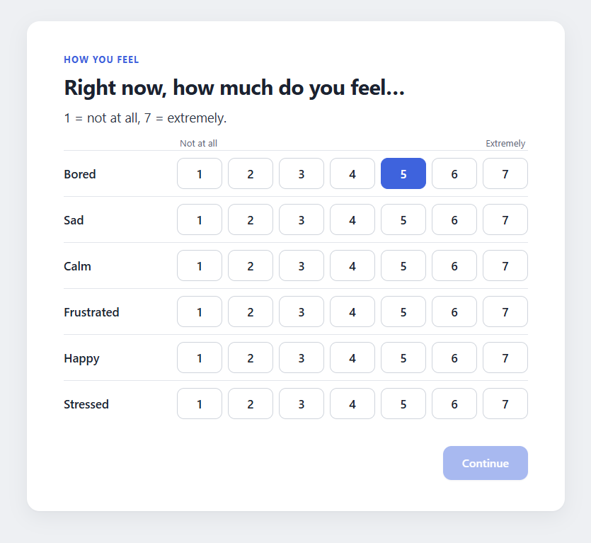
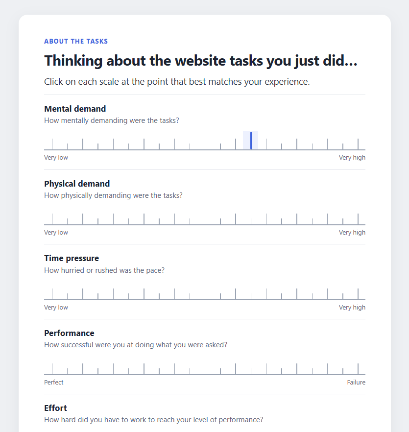
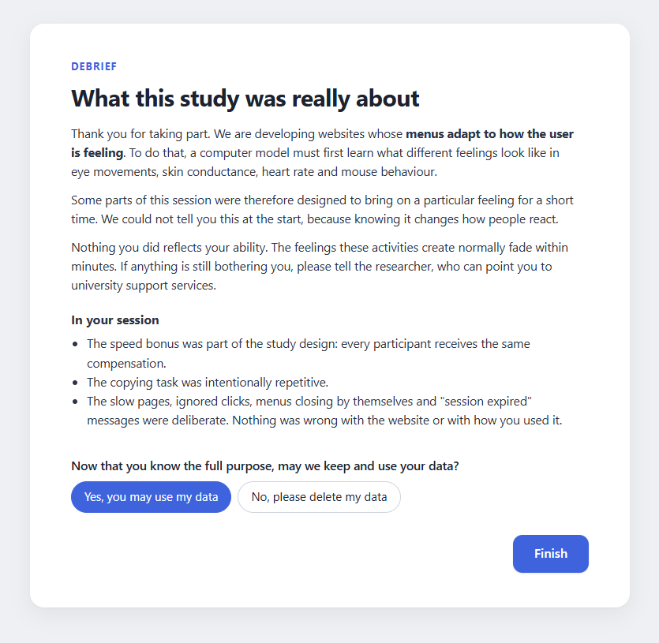